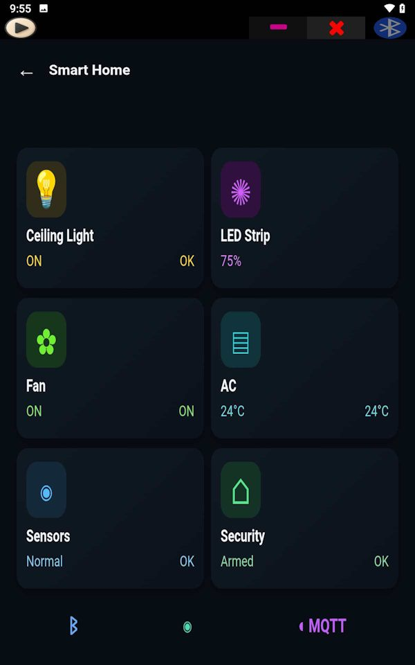
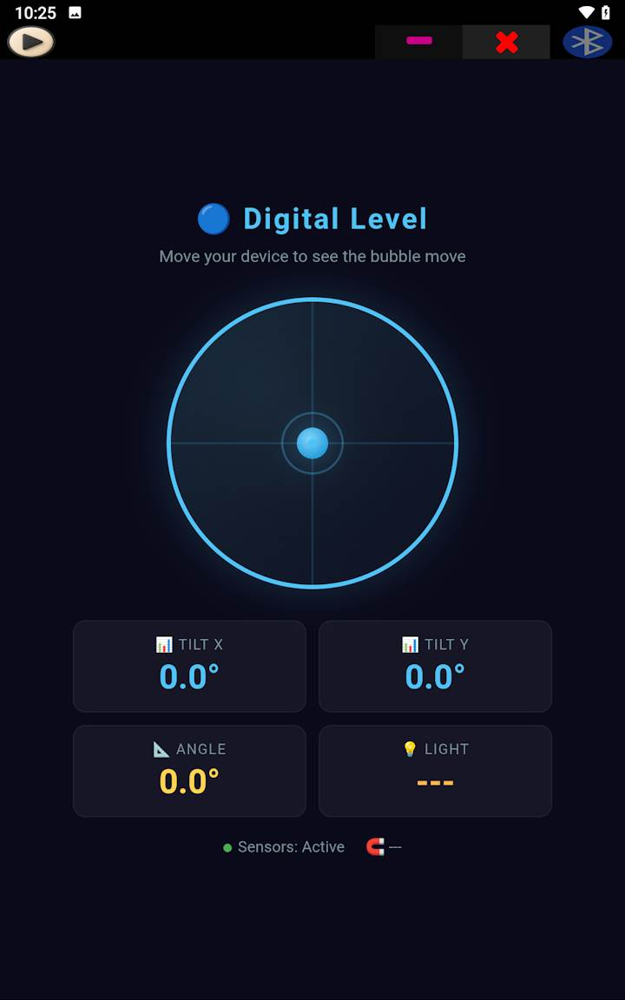

Скажіть ШІ-асистенту, який інструмент вам потрібен, отримайте HTML-код і завантажте його в SoifGo; від простого калькулятора чи навчального інструмента до, для любителів електроніки, керування Arduino та ESP32.


Усе, що можливо на вебсторінці, можливо й у SoifGo. SoifGo запускає ваші інструменти як HTML і зберігає їх у папках. Від калькуляторів і симуляторів до навчальних інструментів і панелей, а за потреби — керування обладнанням через Bluetooth і MQTT.
У SoifGo немає вбудованого ШІ. Робочий процес простий: ви описуєте обраному ШІ-асистенту, що хочете, він дає вам HTML-код, а ви запускаєте цей код у SoifGo. Якщо ви вмієте написати вебсторінку або просто описати ідею ШІ-асистенту, ви можете створити власний інструмент.
Спеціалізовані калькулятори, побудова графіків і функцій, симуляції та інструменти для розв’язання задач — саме такі, як вам потрібно.
Інтерактивні інструменти для занять, практики й тестів. Надішліть файл учням і слухачам, щоб вони запустили його самостійно.
Інженерні калькулятори, конвертери одиниць і особисті розрахункові таблиці, доступні на роботі навіть без інтернету.
Bluetooth- і MQTT-контролери та панелі для Arduino, ESP32, ESP8266 і Raspberry Pi.
Розкажіть ШІ-асистенту свою ідею, отримайте HTML-код і запустіть його в SoifGo.
Готові створити свій перший інструмент?
Отримати SoifGo →
З SoifGo працює будь-який пристрій, що використовує Bluetooth SPP/BLE (наприклад, HC-05 і HC-06), MQTT або HTTP REST: Arduino, ESP32, ESP8266 і Raspberry Pi.
Надсилайте команди для світлодіодів, моторів і реле через Bluetooth, створіть міст Bluetooth–MQTT або панель датчиків у реальному часі — усе на HTML, без нативного коду.
SoifGo пропонує папки та сторінки, щоб підтримувати лад у роботі. На кожній сторінці є 40 кнопок і 10 повзунків, і для кожної кнопки можна задати певну поведінку, зокрема перехід між папками та сторінками SoifGo. Так можна створити багато меню.
Кнопки мають готові базові оформлення: колір, значок, назву, шрифт, звук і вібрацію. Їх можна переміщувати перетягуванням. Кожна кнопка може мати базову поведінку, як-от надсилання й отримання.
«Веб-поведінка» (WebView) допомагає втілити ваші ідеї й побажання з найбільшими можливостями — як HTML, онлайн і офлайн. Просто опишіть ШІ-асистенту, що хочете, і попросіть HTML-код. Далі є два варіанти:
Обидва способи працюють, а ваш вебзастосунок зберігається в папці SoifGo. Чи це калькулятор, Bluetooth-контролер, моніторинг IoT або будь-що інше.
Виконайте ці кроки один раз, і матимете готову кнопку для запуску коду:
Наступного разу, коли отримаєте новий код від ШІ-асистента, просто перейдіть на ту саму сторінку, торкніться Edit, виберіть Select All and Paste на екрані редагування WebView і знову торкніться жовтої кнопки. Якщо ви користуєтеся File Explorer, телефон може не підтримувати цю частину; тоді найкраще встановити на телефон відповідний файловий менеджер.
На кожній сторінці можна мати 40 різних вебзастосунків. Вам не потрібно щоразу просити їх у ШІ-асистента, і ви можете працювати з ними офлайн. Їх можна навіть надсилати колегам, друзям чи слухачам, щоб вони завантажили й запустили їх.
Сучасний рушій браузера: Canvas, SVG, WebGL і бібліотеки на кшталт Chart.js, D3 та Three.js для графіків, симуляцій і 3D-відображення.
Готові кнопки й повзунки зовсім без коду — для простих елементів керування та меню.
Зберігайте дані за допомогою localStorage навіть після закриття застосунку.
Навколишнє освітлення, рух (акселерометр) і магнітометр у реальному часі.
Перетворюйте мовлення на текст і використовуйте його у своїх інструментах або надсилайте на пристрої.
Надсилайте й отримуйте текст з HC-05, HC-06, JDY-31, BLE, Arduino, ESP32 і Raspberry Pi.
Підключайтеся до будь-якого брокера (tcp або ssl), публікуйте й підписуйтеся та перевіряйте стан з’єднання.
Надсилайте JSON на будь-яку адресу, отримуйте відповідь і витягуйте з неї значення.
Ні. Підключення обладнання — лише одна з можливостей. Оскільки ваші інструменти — це HTML, усе, що працює на вебсторінці, як-от обчислення, графіки, симуляції та навчальні інструменти, працює й у SoifGo.
Так. Він безкоштовний, без реклами та без внутрішніх покупок.
HTML-інструменти, Bluetooth і датчики телефона працюють без інтернету. Лише MQTT і HTTP потребують підключення до інтернету або мережі.
З будь-яким пристроєм, що використовує Bluetooth SPP/BLE (наприклад, HC-05 і HC-06), MQTT або HTTP REST, зокрема Arduino, ESP32, ESP8266 і Raspberry Pi.
Достатньо базових знань HTML. Навіть без них ви можете описати ШІ-асистенту, що хочете, і отримати HTML-код. Посібники та готові приклади є на головній сторінці.
SoifGo зазвичай вимовляють «соїф-го», але також кажуть або пишуть Soif Go, Swift Go, Swiftgo, Soyf Go, Sayf Go, Swaif Go чи So if go. Усі ці назви вказують на той самий безкоштовний застосунок для Android — SoifGo. Він не пов’язаний із мовою програмування Swift.
Головна сторінка відкривається із завантаженням, посібниками та документацією.
Увійти в SoifGo → Безкоштовно, офлайн, без реклами — для Android 7 і новіших